本章將介紹使用 filebeat 將 log 丟進 elk
filebeat 下載：https://www.elastic.co/downloads/beats/filebeat
PS：filebeat 盡量跟 elk 同版本
解壓縮 filebeat 到你要的路徑下
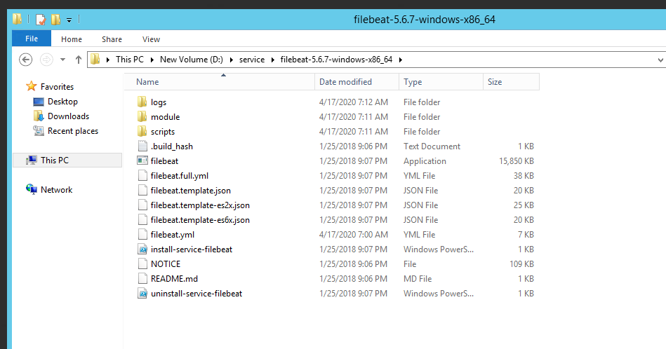
開啟 filebeat 資料夾底下的 filebeat.yml 檔，可以看到蒐集器的設定，路徑以自己本機 log 放置位置為主
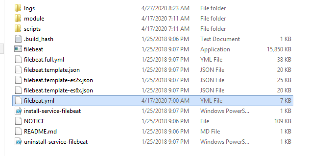
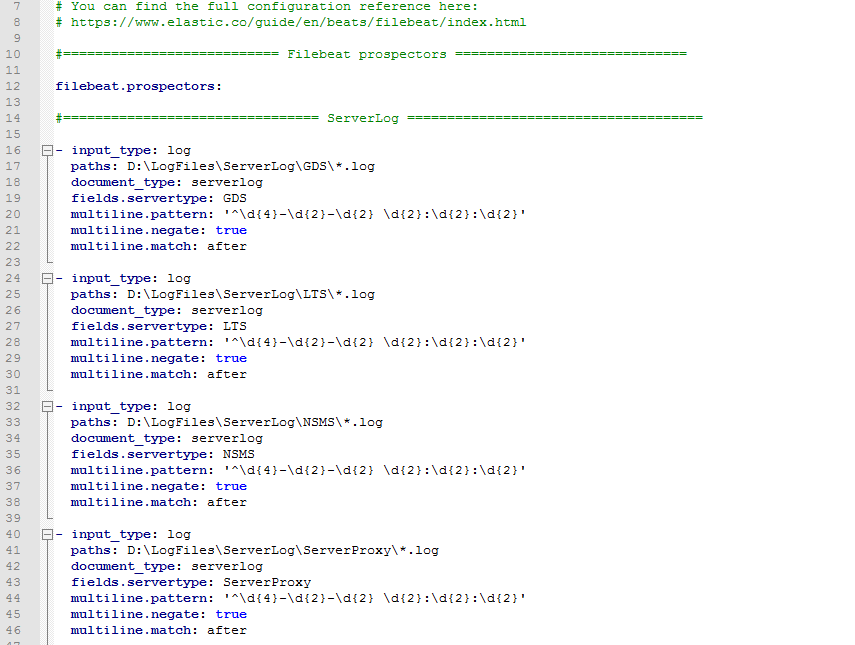
第183行的 env 的值，請修改為屆時要在 Kibana Fields 的名稱
第198行請輸入 ELK 機器的內網 IP
第206行的 key 值，請輸入相同於 Logstash.conf 內 input 底下 key 值
第357行的 password 值，請輸入相同於 Logstash.conf 內 input 底下的 password 值
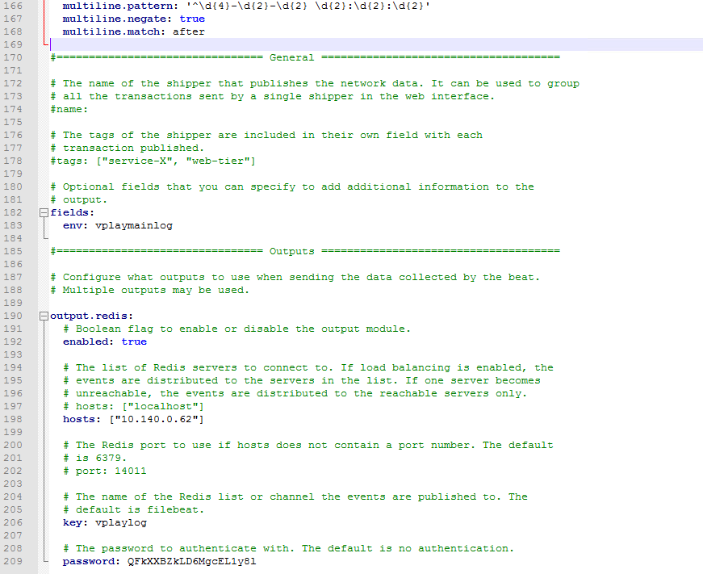
以系統管理員開啟 Windows Power Shell，輸入指令執行安裝 filebeat 服務，並啟動服務
1 | d: |
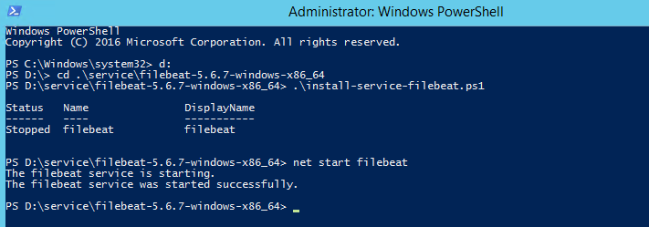
到 windows 服務去檢查是否啟動
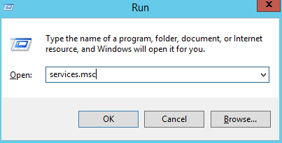
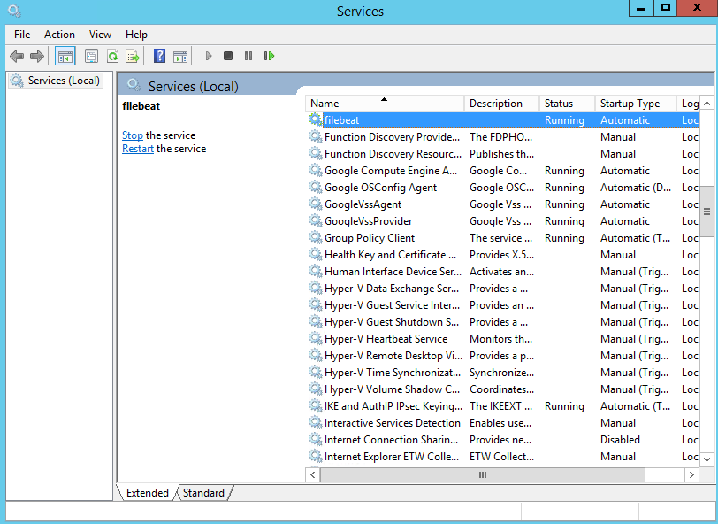
回到 ELK 下指令可以看到 index
1 | curl -XGET http://127.0.0.1:9200/_cat/indices?v |
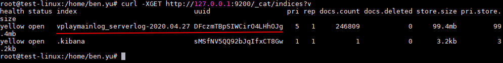
開啟 web 輸入 elk 機器外網 IP 進入 elk
進入 kibana 畫面
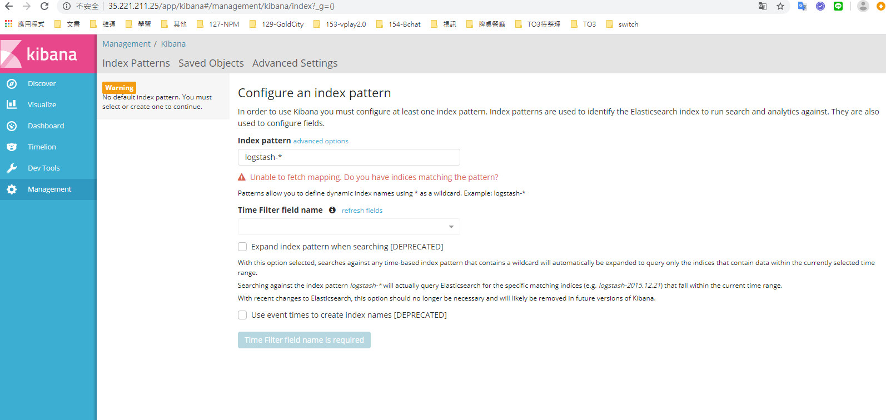
輸入剛剛在 elk 看到的 index
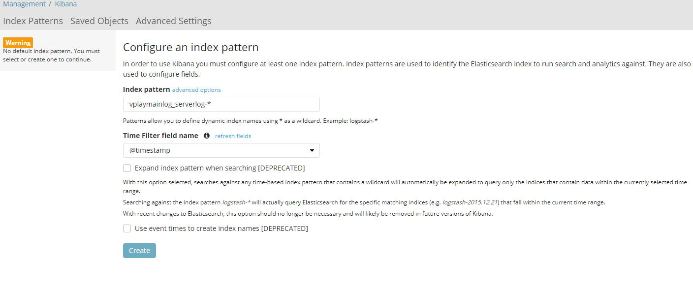
點擊左邊 discover 就可以看到匯入的 log 了
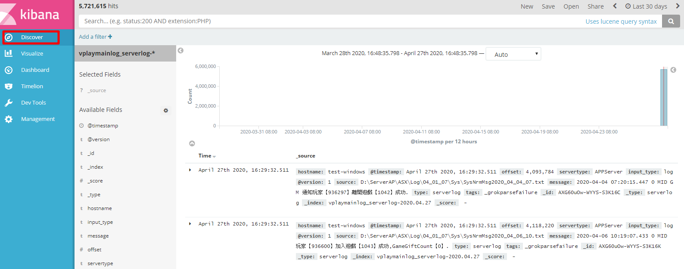